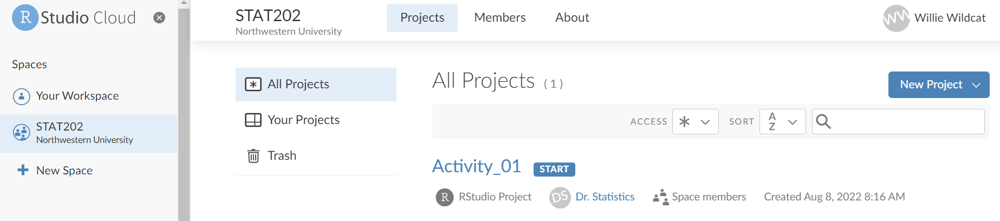
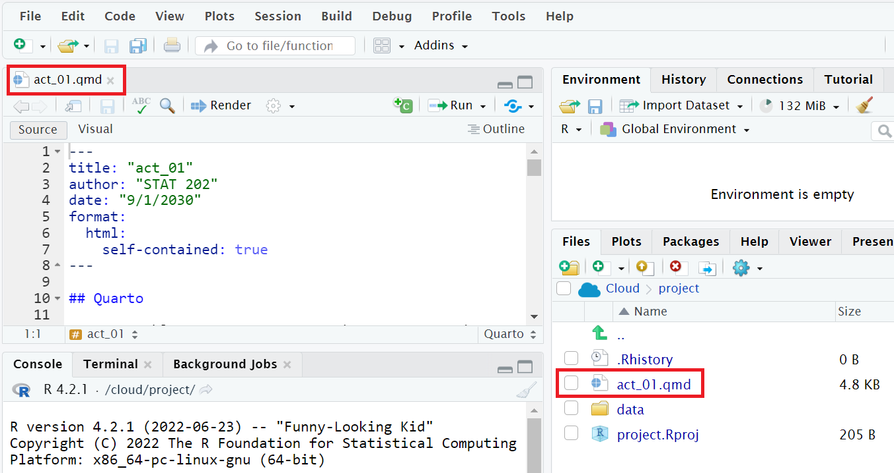
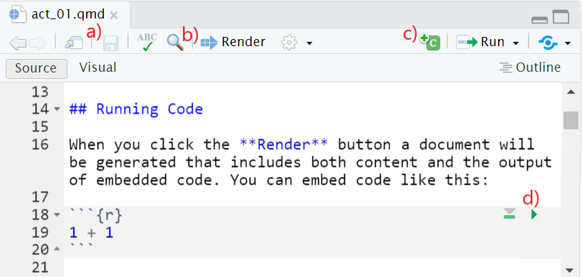

x <- 44-20
three <- 3
x+three[1] 27Before we can start exploring data in R, there are some key concepts to understand first:
We’ll introduce these concepts in upcoming Sections 1.1 - 1.3 If you are already somewhat familiar with these concepts, feel free to skip to Section 1.4 where we’ll introduce our first data set: all domestic flights departing a New York City airport in 2013. This is a dataset we will explore in depth in this book.
For much of this book, we will assume that you are using R via RStudio. First time users often confuse the two. At its simplest:
| R: Engine | RStudio: Dashboard |
|---|---|
 |
 |
More precisely, R is a programming language that runs computations while RStudio is an integrated development environment (IDE) that provides an interface by adding many convenient features and tools. So just as having access to a speedometer, rearview mirrors, and a navigation system makes driving much easier, using RStudio’s interface makes using R much easier as well.
RStudio Cloud (https://rstudio.cloud) is a hosted version of RStudio that allows you to begin coding directly from your browser - there is no software to install and nothing to configure on your computer.
To begin using RStudio Cloud use the link provided by your instructor to gain access to the classroom workspace. You will be prompted to create a free account or log in if you have an existing account.
After you open RStudio Cloud, you should now have access to the classroom under ‘Spaces’ on the left hand side (in this case ‘STAT202’).

Throughout this course you will be working on various activities. Once the instructor has made an activity available you will click on the classroom Workspace (STAT202) to access the available projects. To begin working on an activity click ‘Start’. Once that activity project is open navigate to the ‘File’ pane and open the Quarto ‘.qmd’ file.

You can use RStudio Cloud for personal use as well by creating projects in ‘Your Workspace’. However, RStudio Cloud limits the number of projects and amount of accessible time so it is recommended that you later install the software on your own computer.
Note about RStudio Server or RStudio Cloud: If your instructor has provided you with a link and access to RStudio Server or RStudio Cloud, then you can skip this section. We do recommend after a few months of working on RStudio Server/Cloud that you return to these instructions to install this software on your own computer though. You will first need to download and install both R and RStudio (Desktop version) on your computer. It is important that you install R first and then install RStudio second.
You must do this first: Download and install R.
You must do this second: Download and install RStudio.
Recall our car analogy from above. Much as we don’t drive a car by interacting directly with the engine but rather by interacting with elements on the car’s dashboard, we won’t be using R directly but rather we will use RStudio’s interface. After you install R and RStudio on your computer, you’ll have two new programs AKA applications you can open. We will always work in RStudio and not R. In other words:
| R: Do not open this | RStudio: Open this |
|---|---|
 |
After you open RStudio, you should see the following:

Note the three panes, which are three panels dividing the screen: The Console pane, the Files pane, and the Environment pane. Over the course of this chapter, you’ll come to learn what purpose each of these panes serve.
Now that you’re set up with R and RStudio, you are probably asking yourself “OK. Now how do I use R?” The first thing to note as that unlike other statistical software programs like Excel, STATA, or SAS that provide point and click interfaces, R is an interpreted language, meaning you have to enter in R commands written in R code. In other words, you have to code/program in R. Note that we’ll use the terms “coding” and “programming” interchangeably in this book.
While it is not required to be a seasoned coder/computer programmer to use R, there is still a set of basic programming concepts that R users need to understand. Consequently, while this book is not a book on programming, you will still learn just enough of these basic programming concepts needed to explore and analyze data effectively.
Quarto allows you to easily create a document which combines your code, the results from your code, as well as any text that accompanies the analysis. To create a new Quarto file, in RStudio select File>New File>Quarto Document. Then, you will see a window pop-up titled New Quarto Document. Here, you specify the type of file you wish to create. HTML is generally the recommended document type since it does not have traditional page separators like PDF and Word do. You can also choose a title and author for your document using their respective fields. Finally, select Create to create your new Quarto file. You will see it appear as a tab in your RStudio session. Click the save icon to save your new document.
The following is an example of a Quarto document:

When you create your Quarto file and Render it into a document, the chunks are run in order and any output from them is shown in the document, in the order and location that their respective chunk appears. Sometimes you may wish to type code or analyze data without it printing in the document. If that is the case, you type the code in the Console rather than in the .qmd file.
While you read through this book, it will be helpful to have a Quarto document open so you can copy code provided and paste it into a code chunk to run.
We now introduce some basic programming concepts and terminology. Instead of asking you to learn all these concepts and terminology right now, we’ll guide you so that you’ll “learn by doing.” Note that in this book we will always use a different font to distinguish regular text from computer_code. The best way to master these topics is, in our opinions, “learning by doing” and lots of repetition.
Basics:
x <- 44 - 20 and three <- 3. This would allow us to run x + three which would return 27.In RStudio try typing the following code into the console or code chunk.
x <- 44-20
three <- 3
x+three[1] 27You should see x and three appear as stored objects in the Environment pane. Anything you store in the Environment pane can be referenced and used later. R can also be used as a calculator, notice how it evaluates x+three.
Vectors: A series of values. These are created using the c() function, where c() stands for “combine” or “concatenate”. For example: c(6, 11, 13, 31, 90, 92).
Factors: Categorical data are represented in R as factors.
Data frames: Data frames are like rectangular spreadsheets: they are representations of datasets in R where the rows correspond to observations and the columns correspond to variables that describe the observations. We’ll cover data frames later in Section 1.4.
Conditionals:
== (and not = which is typically used for assignment). Ex: 2 + 1 == 3 compares 2 + 1 to 3 and is correct R code, while 2 + 1 = 3 will return an error.TRUE/FALSE statements and mathematical operators such as < (less than), <= (less than or equal), and != (not equal to).& representing “and” as well as | representing “or.” Ex: (2 + 1 == 3) & (2 + 1 == 4) returns FALSE since both clauses are not TRUE (only the first clause is TRUE). On the other hand, (2 + 1 == 3) | (2 + 1 == 4) returns TRUE since at least one of the two clauses is TRUE.Functions, also called commands: Functions perform tasks in R. They take in inputs called arguments and return outputs. You can either manually specify a function’s arguments or use the function’s default values.
This list is by no means an exhaustive list of all the programming concepts and terminology needed to become a savvy R user; such a list would be so large it wouldn’t be very useful, especially for novices. Rather, we feel this is a minimally viable list of programming concepts and terminology you need to know before getting started. We feel that you can learn the rest as you go. Remember that your mastery of all of these concepts and terminology will build as you practice more and more.
One thing that intimidates new R and RStudio users is how it reports errors, warnings, and messages. R reports errors, warnings, and messages in a glaring red font, which makes it seem like it is scolding you. However, seeing red text in the console is not always bad.
R will show red text in the console pane in three different situations:
Errors: When the red text is a legitimate error, it will be prefaced with “Error in…” and try to explain what went wrong. Generally when there’s an error, the code will not run. For example, we’ll see in Subsection 1.3.3 if you see Error in ggplot(...) : could not find function "ggplot", it means that the ggplot() function is not accessible because the package that contains the function (ggplot2) was not loaded with library(ggplot2). Thus you cannot use the ggplot() function without the ggplot2 package being loaded first.
Warnings: When the red text is a warning, it will be prefaced with “Warning:” and R will try to explain why there’s a warning. Generally your code will still work, but with some caveats. For example, you will see in Chapter 2 if you create a scatterplot based on a dataset where one of the values is missing, you will see this warning: Warning: Removed 1 rows containing missing values (geom_point). R will still produce the scatterplot with all the remaining values, but it is warning you that one of the points isn’t there.
Messages: When the red text doesn’t start with either “Error” or “Warning”, it’s just a friendly message. You’ll see these messages when you load R packages in the upcoming Subsection 1.3.2 or when you read data saved in spreadsheet files with the read_csv() function as you’ll see in Chapter 4. These are helpful diagnostic messages and they don’t stop your code from working. Additionally, you’ll see these messages when you install packages too using install.packages().
Remember, when you see red text in the console, don’t panic. It doesn’t necessarily mean anything is wrong. Rather:
If the text starts with “Error”, figure out what’s causing it. Think of errors as a red traffic light: something is wrong!
If the text starts with “Warning”, figure out if it’s something to worry about. For instance, if you get a warning about missing values in a scatterplot and you know there are missing values, you’re fine. If that’s surprising, look at your data and see what’s missing. Think of warnings as a yellow traffic light: everything is working fine, but watch out/pay attention.
Otherwise the text is just a message. Read it, wave back at R, and thank it for talking to you. Think of messages as a green traffic light: everything is working fine.
Learning to code/program is very much like learning a foreign language, it can be very daunting and frustrating at first. Such frustrations are very common and it is very normal to feel discouraged as you learn. However just as with learning a foreign language, if you put in the effort and are not afraid to make mistakes, anybody can learn.
Here are a few useful tips to keep in mind as you learn to program:
Remember that computers are not actually that smart: You may think your computer or smartphone are “smart,” but really people spent a lot of time and energy designing them to appear “smart.” Rather you have to tell a computer everything it needs to do. Furthermore the instructions you give your computer can’t have any mistakes in them, nor can they be ambiguous in any way.
Take the “copy, paste, and tweak” approach: Especially when learning your first programming language, it is often much easier to taking existing code that you know works and modify it to suit your ends, rather than trying to write new code from scratch. We call this the copy, paste, and tweak approach. So early on, we suggest not trying to write code from memory, but rather take existing examples we have provided you, then copy, paste, and tweak them to suit your goals. Don’t be afraid to play around!
The best way to learn to code is by doing: Rather than learning to code for its own sake, we feel that learning to code goes much smoother when you have a goal in mind or when you are working on a particular project, like analyzing data that you are interested in.
Practice is key: Just as the only method to improving your foreign language skills is through practice, practice, and practice; so also the only method to improving your coding is through practice, practice, and practice. Don’t worry however; we’ll give you plenty of opportunities to do so!
Another point of confusion with many new R users is the idea of an R package. R packages extend the functionality of R by providing additional functions, data, and documentation. They are written by a world-wide community of R users and can be downloaded for free from the internet. For example, among the many packages we will use in this book are the ggplot2 package for data visualization in Chapter 2, the dplyr package for data wrangling in Chapter 3, and the moderndive package that accompanies this book.
A good analogy for R packages is they are like apps you can download onto a mobile phone:
| R: A new phone | R Packages: Apps you can download |
|---|---|
 |
 |
So R is like a new mobile phone: while it has a certain amount of features when you use it for the first time, it doesn’t have everything. R packages are like the apps you can download onto your phone from Apple’s App Store or Android’s Google Play.
Let’s continue this analogy by considering the Instagram app for editing and sharing pictures. Say you have purchased a new phone and you would like to share a recent photo you have taken on Instagram. You need to:
Install the app: Since your phone is new and does not include the Instagram app, you need to download the app from either the App Store or Google Play. You do this once and you’re set. You might do this again in the future any time there is an update to the app.
Open the app: After you’ve installed Instagram, you need to open the app.
Once Instagram is open on your phone, you can then proceed to share your photo with your friends and family. The process is very similar for using an R package. You need to:
Install the package: This is like installing an app on your phone. Most packages are not installed by default when you install R and RStudio. Thus if you want to use a package for the first time, you need to install it first. Once you’ve installed a package, you likely won’t install it again unless you want to update it to a newer version.
“Load” the package: “Loading” a package is like opening an app on your phone. Packages are not “loaded” by default when you start RStudio on your computer; you need to “load” each package you want to use every time you start RStudio.
Let’s now show you how to perform these two steps for the ggplot2 package for data visualization.
Note about RStudio Server/Cloud: If your instructor has provided you with a link and access to RStudio Server/Cloud, you probably will not need to install packages, as they have likely been pre-installed for you by your instructor. That being said, it is still a good idea to know this process for later on when you are not using RStudio Server/Cloud, but rather RStudio Desktop on your own computer.
There are two ways to install an R package. For example, to install the ggplot2 package:
Easy way: In the Files pane of RStudio:
Click on the “Packages” tab
Click on “Install”
Type the name of the package under “Packages (separate multiple with space or comma):” In this case, type ggplot2
Click “Install”

Slightly harder way: An alternative but slightly less convenient way to install a package is by typing install.packages("ggplot2") in the Console pane of RStudio and hitting enter. Note you must include the quotation marks.
Much like an app on your phone, you only have to install a package once. However, if you want to update an already installed package to a newer verions, you need to re-install it by repeating the above steps.
Recall that after you’ve installed a package, you need to “load” it, in other words open it. We do this by using the library() command. For example, to load the ggplot2 package, run the following code in the Console pane. What do we mean by “run the following code”? Either type or copy & paste the following code into the Console pane and then hit the enter key.
library(ggplot2)If after running the above code, a blinking cursor returns next to the > “prompt” sign, it means you were successful and the ggplot2 package is now loaded and ready to use. If however, you get a red “error message” that reads…
Error in library(ggplot2) : there is no package called ‘ggplot2’… it means that you didn’t successfully install it. In that case, go back to the previous subsection “Package installation” and install it.
One extremely common mistake new R users make when wanting to use particular packages is that they forget to “load” them first by using the library() command we just saw. Remember: you have to load each package you want to use every time you start RStudio. If you don’t first “load” a package, but attempt to use one of its features, you’ll see an error message similar to:
Error: could not find functionR is telling you that you are trying to use a function in a package that has not yet been “loaded.” Almost all new users forget do this when starting out, and it is a little annoying to get used to. However, you’ll remember with practice.
Let’s put everything we’ve learned so far into practice and start exploring some real data! Data comes to us in a variety of formats, from pictures to text to numbers. Throughout this book, we’ll focus on datasets that are saved in “spreadsheet”-type format; this is probably the most common way data are collected and saved in many fields. Remember from Subsection 1.2.2 that these “spreadsheet”-type datasets are called data frames in R; we will focus on working with data saved as data frames throughout this book.
Let’s first load all the packages needed for this chapter, assuming you’ve already installed them. Read Section 1.3 for information on how to install and load R packages if you haven’t already.
library(nycflights13)
library(dplyr)
library(knitr)At the beginning of all subsequent chapters in this text, we’ll always have a list of packages that you should have installed and loaded to work with that chapter’s R code.
nycflights13 packageMany of us have flown on airplanes or know someone who has. Air travel has become an ever-present aspect in many people’s lives. If you live in or are visiting a relatively large city and you walk around that city’s airport, you see gates showing flight information from many different airlines. And you will frequently see that some flights are delayed because of a variety of conditions. Are there ways that we can avoid having to deal with these flight delays?
We’d all like to arrive at our destinations on time whenever possible. (Unless you secretly love hanging out at airports. If you are one of these people, pretend for the moment that you are very much anticipating being at your final destination.) Throughout this book, we’re going to analyze data related to flights contained in the nycflights13 package (Wickham 2021). Specifically, this package contains five data sets saved in five separate data frames with information about all domestic flights departing from New York City in 2013. These include Newark Liberty International (EWR), John F. Kennedy International (JFK), and LaGuardia (LGA) airports:
flights: Information on all 336,776 flightsairlines: A table matching airline names and their two letter IATA airline codes (also known as carrier codes) for 16 airline companiesplanes: Information about each of 3,322 physical aircraft used.weather: Hourly meteorological data for each of the three NYC airports. This data frame has 26,115 rows, roughtly corresponding to the 365 \(\times\) 24 \(\times\) 3 = 26,280 possible hourly measurements one can observe at three locations over the course of a year.airports: Airport names, codes, and locations for 1,458 destination airports.flights data frameWe will begin by exploring the flights data frame that is included in the nycflights13 package and getting an idea of its structure. Run the following code in your console (either by typing it or cutting & pasting it): it loads in the flights dataset into your Console. Note depending on the size of your monitor, the output may vary slightly.
flights# A tibble: 336,776 × 19
year month day dep_time sched_dep_time dep_delay arr_time sched_arr_time
<int> <int> <int> <int> <int> <dbl> <int> <int>
1 2013 1 1 517 515 2 830 819
2 2013 1 1 533 529 4 850 830
3 2013 1 1 542 540 2 923 850
4 2013 1 1 544 545 -1 1004 1022
5 2013 1 1 554 600 -6 812 837
6 2013 1 1 554 558 -4 740 728
7 2013 1 1 555 600 -5 913 854
8 2013 1 1 557 600 -3 709 723
9 2013 1 1 557 600 -3 838 846
10 2013 1 1 558 600 -2 753 745
# ℹ 336,766 more rows
# ℹ 11 more variables: arr_delay <dbl>, carrier <chr>, flight <int>,
# tailnum <chr>, origin <chr>, dest <chr>, air_time <dbl>, distance <dbl>,
# hour <dbl>, minute <dbl>, time_hour <dttm>Let’s unpack this output:
A tibble: 336,776 x 19: A tibble is a kind of data frame used in R. This particular data frame has
336,776 rows19 columns corresponding to 19 variables describing each observationyear month day dep_time sched_dep_time dep_delay arr_time are different columns, in other words variables, of this data frame.
We then have the first 10 rows of observations corresponding to 10 flights.
... with 336,766 more rows, and 11 more variables: indicating to us that 336,766 more rows of data and 11 more variables could not fit in this screen.
Unfortunately, this output does not allow us to explore the data very well. Let’s look at different tools to explore data frames.
Among the many ways of getting a feel for the data contained in a data frame such as flights, we present three functions that take as their “argument”, in other words their input, the data frame in question. We also include a fourth method for exploring one particular column of a data frame:
View() function built for use in RStudio. We will use this the most.glimpse() function, which is included in the dplyr package.kable() function, which is included in the knitr package.$ operator to view a single variable in a data frame.1. View():
Run View(flights) in your Console in RStudio, either by typing it or cutting & pasting it into the Console pane, and explore this data frame in the resulting pop-up viewer. You should get into the habit of always Viewing any data frames that come your way. Note the capital “V” in View. R is case-sensitive so you’ll receive an error is you run view(flights) instead of View(flights).
By running View(flights), we see the different variables listed in the columns and we see that there are different types of variables. Some of the variables like distance, day, and arr_delay are what we will call quantitative variables. These variables are numerical in nature. Other variables here are categorical.
Note that if you look in the leftmost column of the View(flights) output, you will see a column of numbers. These are the row numbers of the dataset. If you glance across a row with the same number, say row 5, you can get an idea of what each row corresponds to. In other words, this will allow you to identify what object is being referred to in a given row. This is often called the observational unit. The observational unit in this example is an individual flight departing New York City in 2013. You can identify the observational unit by determining what “thing” is being measured or described by each of the variables.
2. glimpse():
The second way to explore a data frame is using the glimpse() function included in the dplyr package. Thus, you can only use the glimpse() function after you’ve loaded the dplyr package. This function provides us with an alternative method for exploring a data frame:
glimpse(flights)Rows: 336,776
Columns: 19
$ year <int> 2013, 2013, 2013, 2013, 2013, 2013, 2013, 2013, 2013, 2…
$ month <int> 1, 1, 1, 1, 1, 1, 1, 1, 1, 1, 1, 1, 1, 1, 1, 1, 1, 1, 1…
$ day <int> 1, 1, 1, 1, 1, 1, 1, 1, 1, 1, 1, 1, 1, 1, 1, 1, 1, 1, 1…
$ dep_time <int> 517, 533, 542, 544, 554, 554, 555, 557, 557, 558, 558, …
$ sched_dep_time <int> 515, 529, 540, 545, 600, 558, 600, 600, 600, 600, 600, …
$ dep_delay <dbl> 2, 4, 2, -1, -6, -4, -5, -3, -3, -2, -2, -2, -2, -2, -1…
$ arr_time <int> 830, 850, 923, 1004, 812, 740, 913, 709, 838, 753, 849,…
$ sched_arr_time <int> 819, 830, 850, 1022, 837, 728, 854, 723, 846, 745, 851,…
$ arr_delay <dbl> 11, 20, 33, -18, -25, 12, 19, -14, -8, 8, -2, -3, 7, -1…
$ carrier <chr> "UA", "UA", "AA", "B6", "DL", "UA", "B6", "EV", "B6", "…
$ flight <int> 1545, 1714, 1141, 725, 461, 1696, 507, 5708, 79, 301, 4…
$ tailnum <chr> "N14228", "N24211", "N619AA", "N804JB", "N668DN", "N394…
$ origin <chr> "EWR", "LGA", "JFK", "JFK", "LGA", "EWR", "EWR", "LGA",…
$ dest <chr> "IAH", "IAH", "MIA", "BQN", "ATL", "ORD", "FLL", "IAD",…
$ air_time <dbl> 227, 227, 160, 183, 116, 150, 158, 53, 140, 138, 149, 1…
$ distance <dbl> 1400, 1416, 1089, 1576, 762, 719, 1065, 229, 944, 733, …
$ hour <dbl> 5, 5, 5, 5, 6, 5, 6, 6, 6, 6, 6, 6, 6, 6, 6, 5, 6, 6, 6…
$ minute <dbl> 15, 29, 40, 45, 0, 58, 0, 0, 0, 0, 0, 0, 0, 0, 0, 59, 0…
$ time_hour <dttm> 2013-01-01 05:00:00, 2013-01-01 05:00:00, 2013-01-01 0…We see that glimpse() will give you the first few entries of each variable in a row after the variable. In addition, the data type (see Subsection 1.2.2) of the variable is given immediately after each variable’s name inside < >. Here, int and dbl refer to “integer” and “double”, which are computer coding terminology for quantitative/numerical variables. In contrast, chr refers to “character”, which is computer terminology for text data. Text data, such as the carrier or origin of a flight, are categorical variables. The time_hour variable is an example of one more type of data type: dttm. As you may suspect, this variable corresponds to a specific date and time of day. However, we won’t work with dates in this class and leave it to a more advanced book on data science.
3. kable():
The another way to explore the entirety of a data frame is using the kable() function from the knitr package. Let’s explore the different carrier codes for all the airlines in our dataset two ways. Run both of these lines of code in your Console:
airlines
kable(airlines)At first glance, it may not appear that there is much difference in the outputs. However when using tools for document production such as Quarto, the latter code produces output that is much more legible and reader-friendly.
4. $ operator
Lastly, the $ operator allows us to explore a single variable within a data frame. For example, run the following in your console
airlines
airlines$nameWe used the $ operator to extract only the name variable and return it as a vector of length 16. We will only be occasionally exploring data frames using this operator, instead favoring the View() and glimpse() functions.
Another nice feature of R is the help system. You can get help in R by entering a ? before the name of a function or data frame in question and you will be presented with a page showing the documentation. For example, let’s look at the help file for the flights data frame:
?flightsA help file should pop-up in the Help pane of RStudio. If you have questions about a function or data frame included in an R package, you should get in the habit of consulting the help file right away.
We’ve given you what we feel are the most essential concepts to know before you can start exploring data in R. Is this chapter exhaustive? Absolutely not. To try to include everything in this chapter would make the chapter so large it wouldn’t be useful!
If you are completely new to the world of coding, R, and RStudio and feel you could benefit from a more detailed introduction, we suggest you check out Chester Ismay’s short book Getting used to R, RStudio, and R Markdown (Ismay 2016), which includes screencast recordings that you can follow along and pause as you learn. While this book teaches R Markdown it it important to note that everything in R Markdown is transferable to Quarto. R Markdown and Quarto are both tools used for reproducible research but R Markdown is fundamentally tied to R while Quarto is a multi-language platform. For a getting started guide on Quarto, we suggest the Quarto Getting Started webpage

Following each chapter, there are a set of Exercises for you to practice what you have learned. The Conceptual questions are multiple choice or short answer questions focusing on the major concepts learned throughout the chapter. The Application questions focus on practical skills learned throughout the chapter. And the Advanced questions teach new and useful skills beyond what was taught in the chapter.
The chapter exercises use the covid_states, nba, and titanic datasets which are included in the ISDSdatasets package. To install ISDSdatasets on your computer, type remotes::install_github("NUstat/ISDSdatasets") in your Console. You may need to install the remotes package first. See Section 1.3.1 for how to install the remotes package. If you are using RStudio Cloud, your instructor probably already installed all of this for you. You can see what packages you have installed by clicking on the Packages tab in the lower right pane.
To use the package make sure you load it using library(ISDSdatasets). To explore a dataset within the package you can use the View() or data() function in your Console. For example, try typing data(titanic) in the Console. This will load the titanic data into the Environment.
Exercise 1.1 Which type of document do we use to both code and write explanations?
Exercise 1.2 Which type of red text in the console pane generally means that your code will not run?
Exercise 1.3 If you place the operator ? before the name of a function or data frame, then you will be presented with a page showing the documentation for the respective function or data frame.
Exercise 1.4 If you type 8/2 == 4 into the console, what will the output be?
Exercise 1.5 If you type 3^2 != 9 into the console, what will the output be?
Exercise 1.6 If you type 5*3 into the console, what will the output be?
Exercise 1.7 What does any ONE row in this flights dataset refer to?
Exercise 1.8 In the flights dataset, air_time and arr_delay are which type of variables?
Exercise 1.9 In a code chunk, first define a variable z to be the product of 12 and 31, then define a variable called add_on to be the number 12. Print the output of z + add_on.
Exercise 1.10 Consider the titanic data set included in the package ISDSdatasets. This is one of the most popular data sets used for understanding machine learning basics, and you will likely see this data set in the future if you continue on in your studies to machine learning.
Use the glimpse() function from the dplyr package to explore and describe the dataset.
For the following problems we will use the titanic data set to learn additional data exploration techniques.
Exercise 1.11 Use the function head() on the titanic dataset. What does it do? Based on this, what do you expect the function tail() does?
Exercise 1.12 The function unique(), when used on a specific variable within a data set, returns a vector of the values of the variable with duplicate elements removed. Try using the function unique() on the variable Embarked.